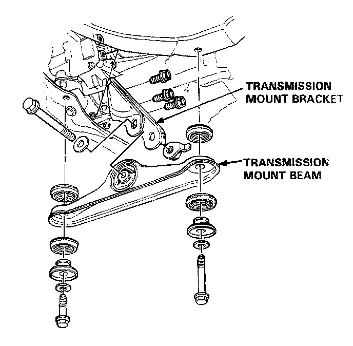
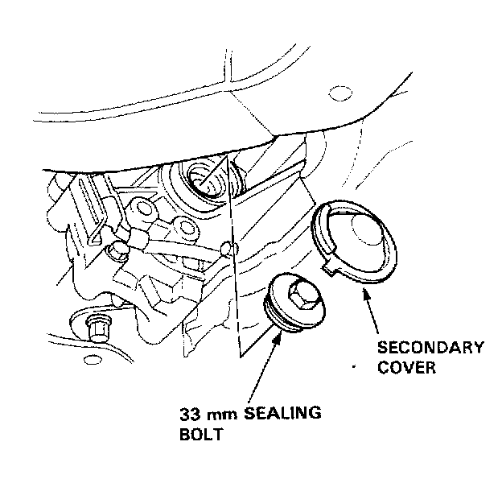
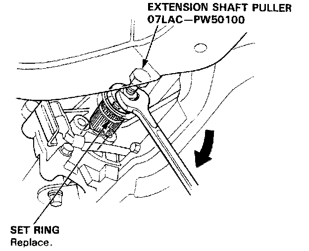
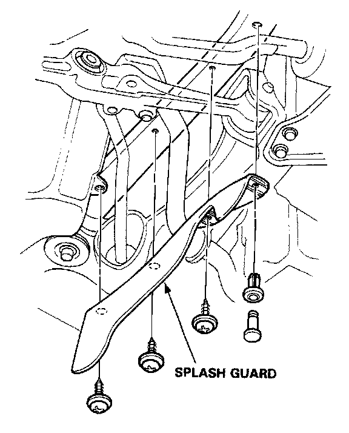
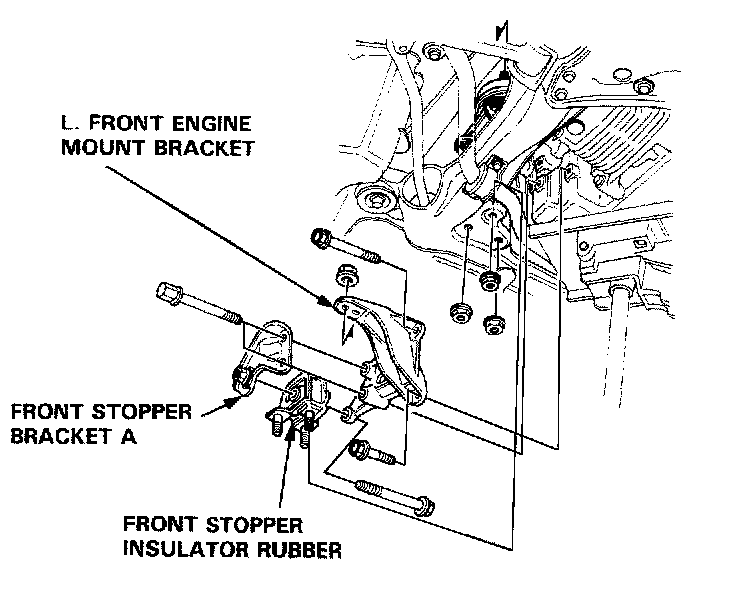
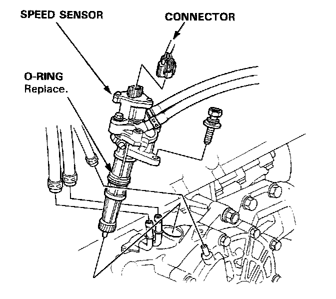
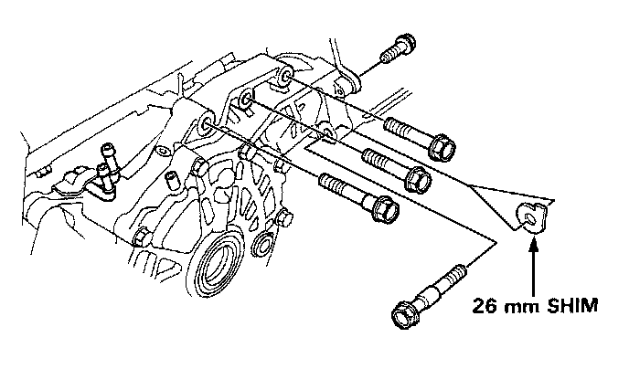
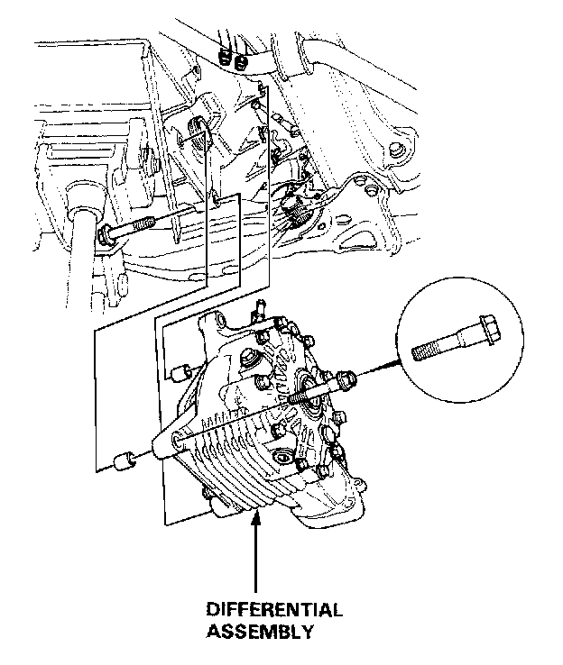

Removal
1. Disconnect the battery negative and positive cables from the battery.2. Remove the air cleaner case.
3. Drain the engine coolant.
4. Remove the drain plug and drain differential oil.
5. Remove the driveshafts and intermediate shaft.
6. Attach a hoist chain to the engine hanger plate, then lift the engine slightly to unload the mounts.

7. Remove the transmission mount beam and transmission mount bracket.
8. Shift transmission into low gear or Park position to lock the secondary gear.

9. Remove the secondary cover and 33mm sealing bolt.

10. Disconnect the extension shaft from the differential using SST #07LAC-PW50100.

11. Remove the splash guard.

12. Remove the front stopper bracket A, front stopper insulator rubber and L. front engine mount bracket.

13. Disconnect the oil cooler hoses, breather tube and connector, then remove the speed sensor.
NOTE: Do not disconnect the hoses of the speed sensor and do not let the coolant flow into the differential.

14. Remove the mounting bolts and 26mm shim.

15. Remove the mounting bolts and differential assembly.